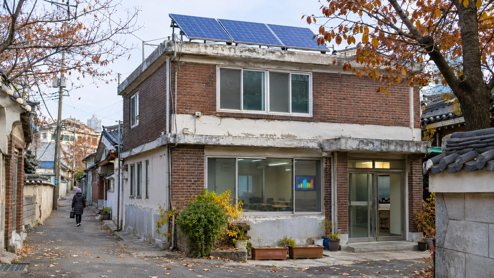

광주 동구 계림동에 주민 주도 '초록계림에너지전환센터' 문 열어…태양광 모니터링·주민 교육 거점

10월 30일 개소식에 주민실천단 등 50여 명…주민·행정·전문기관 협력체계 만들기로, 설비 규모·예산은 공개 안 돼
전남광주통합특별시 동구 계림동에 주민이 주도하는 탄소중립·에너지전환 마을 거점 '초록계림에너지전환센터'가 문을 열었다. 센터는 태양광 발전 모니터링 시스템으로 에너지 생산 현황을 살피면서 주민 교육과 실천 프로그램을 운영하고, 주민이 동네 사정에 맞는 에너지전환 방안을 찾아 실천하도록 주민·행정·전문기관 사이 협력체계를 만든다. 10월 30일 광주기후에너지진흥원 주최, 센터 주관으로 열린 개소식에는 임택 동구청장과 구의원, 계림1동 주민대표, 에너지전환 마을 주민실천단 등 50여 명이 참석해 추진 경과를 듣고 제막식과 모니터링 시스템 시연을 지켜봤다. 임 청장은 주민·행정·전문기관이 함께 지속 가능한 에너지전환 마을 모델을 만들어 가겠다고 밝혔으며, 센터의 태양광 설비 규모와 운영 예산은 공개되지 않았다.
시민에너지 관점
주민이 자기 동네에서 만드는 전기를 눈으로 확인하는 거점은 에너지전환이 정부 계획이 아니라 생활의 일이 되는 출발점이다. 서울의 에너지자립마을들도 주민 모임이 절약과 작은 태양광에서 시작해 마을 단위 사업으로 넓혀 왔다. 교육과 모니터링에만 머물면 행사 공간으로 끝날 수 있다는 우려가 있는 만큼, 동구와 진흥원은 센터가 주민 출자 태양광과 이익 공유 사업으로 이어지도록 사업 설계와 계통 상담까지 함께 지원해야 한다.
출처: 국제뉴스 2026-11-04 류연선 원문 보기
光州・東区鶏林洞に住民主導の「チョロク鶏林エネルギー転換センター」開所…太陽光モニタリングと住民教育の拠点
10月30日の開所式に住民実践団など50人余り…住民・行政・専門機関の協力体制づくりへ、設備規模・予算は非公表
韓国の全南光州統合特別市東区の鶏林洞に、住民が主導する炭素中立・エネルギー転換の地域拠点「チョロク（緑）鶏林エネルギー転換センター」が開所した。センターは太陽光発電のモニタリングシステムでエネルギーの生産状況を確認しながら住民向けの教育や実践プログラムを運営し、住民が地域の事情に合ったエネルギー転換の方策を見つけて実践できるよう、住民・行政・専門機関の協力体制をつくる。10月30日に光州気候エネルギー振興院の主催、同センターの主管で開かれた開所式には、イム・テク東区庁長や区議会議員、鶏林1洞の住民代表、エネルギー転換村の住民実践団など50人余りが出席し、経過報告を聞いて除幕式とモニタリングシステムの実演を見守った。イム区庁長は住民・行政・専門機関が協力して持続可能なエネルギー転換村のモデルをつくっていくと述べたが、センターの太陽光設備の規模や運営予算は公表されていない。
市民エネルギーの視点
住民が自分の町でつくる電気を目で確かめられる拠点は、エネルギー転換が政府の計画ではなく暮らしの営みになる出発点だ。ソウルのエネルギー自立村でも、住民の集まりが節電や小さな太陽光から始めて、村単位の事業へと広げてきた。教育とモニタリングにとどまればイベントの場で終わりかねないとの懸念がある以上、東区と振興院は、センターが住民出資の太陽光や利益共有の事業につながるよう、事業設計から系統の相談まで併せて支援すべきだ。
出典: 国際ニュース 2026-11-04 リュ・ヨンソン 原文を読む
光州东区鸡林洞开设居民主导的"绿色鸡林能源转型中心"…光伏监测与居民教育据点
10月30日开幕仪式有居民实践团等50余人出席…将建立居民、行政与专业机构的合作体系，设施规模和预算未公开
韩国全南光州统合特别市东区鸡林洞开设了由居民主导的碳中和与能源转型社区据点"绿色鸡林能源转型中心"。该中心通过光伏发电监测系统查看能源生产情况，同时开展面向居民的教育和实践项目，并建立居民、行政机关与专业机构之间的合作体系，帮助居民找到并落实符合本地情况的能源转型办法。10月30日由光州气候能源振兴院主办、该中心承办的开幕仪式上，东区厅长Lim Taek、区议员、鸡林1洞居民代表以及能源转型村居民实践团等50余人出席，听取了推进情况汇报，并观看了揭幕仪式和监测系统演示。Lim Taek厅长表示，将由居民、行政机关和专业机构携手打造可持续的能源转型村模式；中心光伏设施的规模和运营预算尚未公开。
市民能源视角
让居民亲眼看到自己社区所发电力的据点，是能源转型从政府计划变成日常生活的起点。首尔的能源自立村，也是由居民团体从节电和小型光伏做起，逐步扩展为以村为单位的项目。既然有人担心若只停留在教育和监测上，中心可能沦为活动场所，东区和振兴院就应一并支持项目设计和电网咨询，让中心延伸到居民出资的光伏和收益共享项目。
来源: 国际新闻 2026-11-04 Ryu Yeon-seon 查看原文
Resident-led Chorok Gyerim Energy Transition Centre opens in Gwangju's Dong-gu as a hub for solar monitoring and community education
About 50 people, including a residents' action group, attended the October 30 opening; the centre will build cooperation between residents, the district and expert bodies, while its solar capacity and budget have not been disclosed
A resident-led neighbourhood hub for carbon neutrality and energy transition, the Chorok ("Green") Gyerim Energy Transition Centre, has opened in Gyerim-dong, Dong-gu, in the Jeonnam-Gwangju Integrated Special City. The centre will track energy production with a solar monitoring system, run education and action programmes for residents, and set up cooperation between residents, the district office and expert bodies so that residents can find and carry out energy transition measures suited to their area. About 50 people attended the opening on October 30, hosted by the Gwangju Climate Energy Agency and organised by the centre, including Dong-gu District Mayor Lim Taek, district councillors, resident representatives from Gyerim 1-dong and members of the energy transition village's residents' action group, who heard a progress report and watched an unveiling and a demonstration of the monitoring system. Lim said residents, the district and expert bodies would work together to build a sustainable energy transition village model, while the size of the centre's solar installation and its operating budget have not been made public.
Citizen Energy View
A place where residents can see the electricity their own neighbourhood produces is where energy transition stops being a government plan and becomes part of daily life. Seoul's energy self-reliant villages likewise grew from residents' groups that started with saving power and small solar panels into village-scale projects. Because a centre limited to education and monitoring risks becoming just an events space, the district and the agency should also support project design and grid advice so that it leads on to resident-funded solar and profit-sharing projects.
Source: Gukje News 2026-11-04 Ryu Yeon-seon Read the original